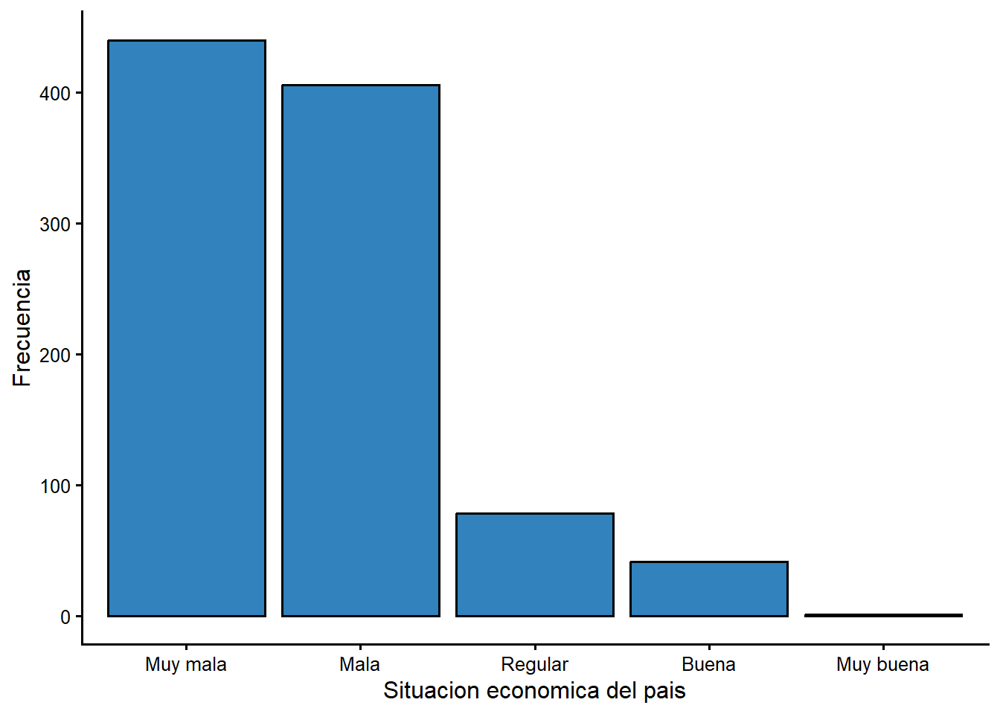
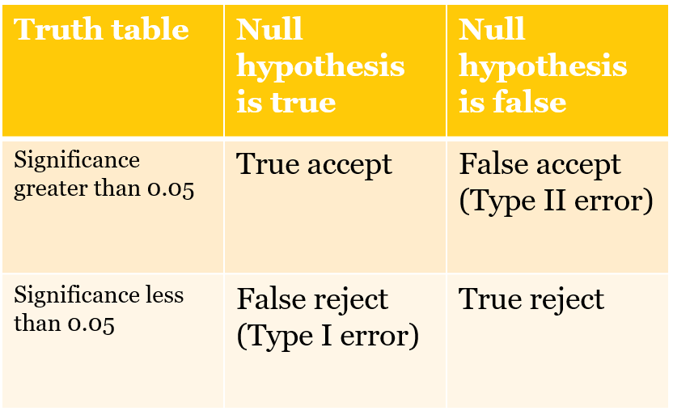

Capitulo 8 Medidas de asociacion: el chi-cuadrado
El estadistico de prueba chi-cuadrado es apropiado cuando la relacion entre dos variables puede resumirse con una tabla simple. Puedes usar la tabla para determinar la direccion de la relacion y si el efecto sobre alguna variable \(Y\) es grande o pequeno, y puedes usar una medida de asociacion (el chi-cuadrado) para hacer una inferencia sobre la poblacion a partir de los datos de la muestra.
En este capitulo usaremos un ejemplo (el vinculo entre genero y nivel educativo) para introducir el chi-cuadrado: como se calcula el estadistico, que significa y como usar el estadistico para evaluar lo que encuentras en una muestra. Tambien cubrimos la contrastacion de hipotesis y los errores de Tipo I y Tipo II.
8.1 ¿Cual es la distribucion de la percepcion economica hoy?
La encuesta del CIEP incluye una pregunta que pide a las personas calificar la situacion economica del pais. La distribucion de las respuestas se resume en la Tabla 8.1.
tabla51 <- ciep %>%
filter(!is.na(sit_f)) %>%
count(sit_f) %>%
mutate(Porcentaje = round(100 * n / sum(n), 1)) %>%
select(`Situacion economica` = sit_f, Porcentaje)
kable(tabla51, digits = 1,
caption = "Fuente: encuesta CIEP-UCR, noviembre 2020.")| Situacion economica | Porcentaje |
|---|---|
| Muy mala | 45.5 |
| Mala | 42.0 |
| Regular | 8.1 |
| Buena | 4.2 |
| Muy buena | 0.1 |
La respuesta mas frecuente es “Muy mala”, seguida de “Mala”. En 2020, en plena pandemia, la percepcion de la economia era marcadamente negativa: mas del 85 % de las personas calificaron la situacion economica como mala o muy mala.
Figura 8.1 Percepcion de la situacion economica del pais

Figura 8.1. Percepcion de la situacion economica del pais, 2020
8.2 ¿Deberiamos esperar diferencias entre mujeres y hombres?
¿Hay un vinculo entre el genero y el nivel educativo? ¿Son las mujeres o los hombres mas propensos a tener estudios universitarios?
Dado lo que ves en la Tabla 8.1, ¿que esperarias observar si comparamos mujeres y hombres? En Costa Rica, las mujeres han superado a los hombres en matricula universitaria en las ultimas decadas, asi que podriamos esperar una mayor proporcion de mujeres con educacion universitaria. Para contrastar esta expectativa, podemos producir una tabla simple y pedir el estadistico de prueba chi-cuadrado.
Los datos de la encuesta del CIEP se resumen en la Tabla 8.2. El estadistico de prueba aparece al final de la tabla.
Tabla 8.2 Genero y nivel educativo, porcentajes, encuesta CIEP 2020
tabla52 <- round(100 * prop.table(table(ciep$sexo_f, ciep$educ_f), margin = 1), 1)
kable(tabla52, digits = 1,
caption = "Porcentajes por fila. Fuente: CIEP-UCR, noviembre 2020.")| Primaria o menos | Secundaria | Universitaria | |
|---|---|---|---|
| Mujer | 26.3 | 41.5 | 32.2 |
| Hombre | 22.1 | 38.3 | 39.6 |
test1 <- chisq.test(table(ciep$sexo_f, ciep$educ_f))
cat("Chi-cuadrado =", round(unname(test1$statistic), 2),
", p =", sprintf("%.3f", test1$p.value),
", gl =", test1$parameter, "\n")
Chi-cuadrado = 6.05 , p = 0.049 , gl = 2 La tabla sugiere que hay algunas diferencias en la distribucion del nivel educativo. Mientras que la categoria mas comun para las mujeres es “Secundaria”, para los hombres la distribucion se inclina un poco mas hacia “Universitaria” (39,6 % de los hombres frente a 32,2 % de las mujeres). El valor p asociado a esta tabla es 0,049, justo por debajo de 0,05, asi que el resultado es estadisticamente significativo, aunque por un margen minimo.
El estadistico de prueba (el chi-cuadrado) se calcula comparando el numero real de personas en cada celda de la tabla con el numero esperado de personas en cada celda. El numero esperado es el que veriamos si la distribucion de los grupos fuera identica a la de la muestra completa. Los conteos observados y esperados se reproducen a continuacion.
Tabla 8.3 Genero y nivel educativo, conteos observados, encuesta CIEP 2020
kable(round(test1$observed, 0), caption = "")| Primaria o menos | Secundaria | Universitaria | |
|---|---|---|---|
| Mujer | 134 | 211 | 164 |
| Hombre | 101 | 175 | 181 |
Tabla 8.4 Genero y nivel educativo, conteos esperados, encuesta CIEP 2020
kable(round(test1$expected, 0), caption = "")| Primaria o menos | Secundaria | Universitaria | |
|---|---|---|---|
| Mujer | 124 | 203 | 182 |
| Hombre | 111 | 183 | 163 |
8.3 Pruebas de chi-cuadrado
8.3.1 ¿Como se calcula el chi-cuadrado?
El estadistico chi-cuadrado (6,05 en la Tabla 8.2) se calcula comparando los numeros esperados y observados en cada celda de la tabla (6 celdas en el ejemplo: 3 columnas por 2 grupos). Para cada celda se toma la diferencia entre esperado y observado, se eleva al cuadrado, se divide entre el esperado y se suman todas las celdas. Las diferencias mas grandes entre observado y esperado contribuyen mas al chi-cuadrado.
8.3.2 ¿Como se usa el chi-cuadrado?
¿Que aprendemos del chi-cuadrado? Observa que el chi-cuadrado esta asociado a un valor p. Este es el nivel de significancia o valor de probabilidad (\(p\)). Lo usamos para determinar si podemos hacer una inferencia sobre la poblacion a partir de los datos de la muestra.
Si \(p < 0,05\), podemos estar bastante confiados de que el resultado que observamos en la muestra tambien se observara en la poblacion. Si \(p > 0,05\), no podemos hacer esa inferencia. Si \(p < 0,05\), decimos que el vinculo entre \(X\) y \(Y\) es estadisticamente significativo. En este caso, \(p = 0,049\), asi que podemos concluir que la distribucion del nivel educativo difiere ligeramente entre mujeres y hombres, pero la diferencia es muy pequena.
8.3.3 ¿Por que se reportan los estadisticos con un valor de p?
Recuerda que la estadistica se basa en la logica del muestreo repetido. Cada conjunto de datos es una muestra aleatoria de una poblacion (una de un numero infinito de muestras aleatorias). Asi, cada muestra produce un valor distinto del estadistico de prueba. Si repitieramos el procedimiento muchas veces, veriamos que los estadisticos tienen distribuciones muestrales con propiedades conocidas, lo que nos permite evaluar la probabilidad de que nuestra muestra provenga de una poblacion sin vinculo entre \(X\) y \(Y\). El valor p es simplemente la probabilidad de que el estadistico observado se extraiga de una distribucion muestral donde el valor verdadero es cero.
8.4 Contrastacion de hipotesis, errores de Tipo I y Tipo II
El calculo y la divulgacion de valores p estan en el corazon de la contrastacion de hipotesis en ciencias sociales. Usamos este valor para contrastar lo que se conoce como hipotesis nula. Normalmente usamos teoria, intuicion o experiencia para formular una expectativa afirmativa sobre como \(X\) influira en \(Y\) (la hipotesis alternativa). La hipotesis nula es simplemente que no hay vinculo: que el valor poblacional del estadistico es cero.
Si \(p < 0,05\), podemos rechazar la hipotesis nula: el estadistico debe ser distinto de cero en la poblacion. Si \(p > 0,05\), aceptamos la nula: probablemente no hay vinculo entre \(X\) y \(Y\).
¿Por que existe el estandar de \(p < 0,05\)? Considera el problema general de la inferencia. La expectativa de que \(X\) influye en \(Y\) podria ser verdadera o falsa en la poblacion, y tu muestra podria respaldar o no tu expectativa. La Tabla 8.5 esquematiza como podria desarrollarse esto.
Tabla 8.5 Errores de Tipo I y Tipo II

Puedes cometer uno de dos tipos de error al hacer una inferencia basada en una muestra. Un error de Tipo I es rechazar una hipotesis nula que deberias aceptar (\(X\) no afecta a \(Y\), pero concluyes que si). Un error de Tipo II es aceptar una hipotesis nula que deberias rechazar (\(X\) si afecta a \(Y\), pero concluyes que no).
Si \(p = 0,05\), hay una probabilidad del 5 % de cometer un error de Tipo I. Este es un estandar arbitrario pero muy extendido en ciencias sociales: solo aceptamos resultados si la probabilidad de un error de Tipo I es menor al 5 %.
La probabilidad de un error de Tipo II depende principalmente del tamano de la muestra (muestras pequenas implican alta probabilidad de error de Tipo II). Una opcion para minimizarlo es recolectar mas datos.
8.4.1 Ejemplo: ¿que pasa si usamos una muestra pequena?
Podemos evaluar cuanto cambia el chi-cuadrado cuando cambia el tamano de la muestra. En nuestra muestra original generamos un chi-cuadrado de 6,05 con 2 grados de libertad, con un valor p de 0,049 (significativo).
Puedes calcular el chi-cuadrado para los mismos porcentajes (las mismas distribuciones para mujeres y hombres), pero con una muestra mas pequena. Si uso una muestra que es una decima parte de la original, veria un chi-cuadrado mucho menor y un valor p muy por encima de 0,05 (no significativo). La muestra pequena llevaria a un error de Tipo II. Los numeros aparecen abajo.
Tabla 8.6 Genero y nivel educativo: chi-cuadrado de la muestra original y de una muestra pequena
n = 966 Chi-cuadrado = 6.05 , p = 0.049 , gl = 2
n = 97 Chi-cuadrado = 0.6 , p = 0.739 , gl = 2 No rechazar la nula no necesariamente “prueba” que la alternativa es falsa: con una muestra pequena simplemente no tienes suficientes datos para hacer una inferencia sobre la poblacion.
8.5 Cuando los errores tienen consecuencias
Equilibrar los errores de Tipo I y Tipo II adquiere una dimension seria cuando los costos de equivocarse son altos. Por ejemplo, la evaluacion de la seguridad de un medicamento o de una vacuna implica decisiones con consecuencias graves. La hipotesis nula seria que el medicamento no es seguro o eficaz. Los datos experimentales deben rechazar la nula. Un error de Tipo I significa liberar un medicamento inseguro; un error de Tipo II significa no liberar un medicamento seguro. ¿Cual es una probabilidad aceptable de error en estos contextos? Depende de la gravedad de la enfermedad y de la disponibilidad de otros tratamientos. En ciencias sociales, una probabilidad del 5 % de error de Tipo I es el estandar. Muestras mas grandes minimizan el error de Tipo II.
8.6 El calculo manual del chi-cuadrado
Para entender de donde sale el estadistico, calculemoslo una vez a mano. La formula general es:
\[X^2=\sum\frac{(f_o-f_e)^2}{f_e}\]
donde \(f_o\) es la frecuencia observada en cada casilla y \(f_e\) la frecuencia esperada si los grupos fueran identicos. La frecuencia esperada de cada casilla se obtiene con:
\[f_e=\frac{TM_{fila}\cdot TM_{columna}}{N}\]
donde \(TM\) es el total marginal (de la fila o de la columna) y \(N\) el total de casos. Veamos un ejemplo de una tabla 2x2 tomado de Levin ((Levin 1999)): se clasifican 20 liberales y 20 conservadores como rigidos o no rigidos en sus metodos de crianza. Las hipotesis son:
- \(H_0\): la frecuencia relativa de liberales y conservadores segun su rigidez es la misma.
- \(H_1\): la frecuencia relativa varia significativamente.
# Tabla 2x2: filas = liberales / conservadores; columnas = no rigidos / rigidos
datos <- matrix(c(5, 15, 10, 10), nrow = 2, byrow = TRUE,
dimnames = list(Grupo = c("Liberales", "Conservadores"),
Rigidez = c("No rigidos", "Rigidos")))
datos
Rigidez
Grupo No rigidos Rigidos
Liberales 5 15
Conservadores 10 10
n <- sum(datos)# Frecuencias observadas de cada casilla (A, B, C, D)
fo_A <- datos[1, 1]; fo_B <- datos[1, 2]
fo_C <- datos[2, 1]; fo_D <- datos[2, 2]
# Totales marginales
tm_r1 <- fo_A + fo_B; tm_r2 <- fo_C + fo_D
tm_c1 <- fo_A + fo_C; tm_c2 <- fo_B + fo_D
# Frecuencias esperadas
fe_A <- tm_r1 * tm_c1 / n; fe_B <- tm_r1 * tm_c2 / n
fe_C <- tm_r2 * tm_c1 / n; fe_D <- tm_r2 * tm_c2 / n
# Paso 1 y 2: diferencias y sus cuadrados
d_A <- fo_A - fe_A; d_B <- fo_B - fe_B
d_C <- fo_C - fe_C; d_D <- fo_D - fe_D
# Paso 3: dividir cada cuadrado entre la frecuencia esperada y sumar
X2 <- d_A^2 / fe_A + d_B^2 / fe_B + d_C^2 / fe_C + d_D^2 / fe_D
X2
[1] 2.666667
# Formula abreviada para tablas 2x2: N(AD - BC)^2 / [(A+B)(C+D)(A+C)(B+D)]
X2_abrev <- n * (fo_A * fo_D - fo_B * fo_C)^2 /
((fo_A + fo_B) * (fo_C + fo_D) * (fo_A + fo_C) * (fo_B + fo_D))
X2_abrev
[1] 2.666667
# Grados de libertad: gl = (filas - 1)(columnas - 1)
gl <- (nrow(datos) - 1) * (ncol(datos) - 1)
gl
[1] 1El chi-cuadrado experimental es 2,67 con 1 grado de libertad. El valor critico de la tabla para 0,05 es 3,84. Como 2,67 < 3,84, aceptamos \(H_0\): no hay diferencias significativas entre liberales y conservadores en su rigidez para criar a los hijos.
8.7 La correccion de Yates
Levin ((Levin 1999)) advierte que, cuando las frecuencias esperadas de una tabla 2x2 son muy pequenas (menos de 10 en alguna casilla), la formula habitual puede producir un chi-cuadrado inflado. En ese caso se aplica la correccion de Yates (o correccion de continuidad), que resta 0,5 al valor absoluto de la diferencia antes de elevarla al cuadrado:
\[X^2_{Yates}=\sum\frac{(|f_o-f_e|-0,5)^2}{f_e}\]
yates_A <- (abs(fo_A - fe_A) - 0.5)^2 / fe_A
yates_B <- (abs(fo_B - fe_B) - 0.5)^2 / fe_B
yates_C <- (abs(fo_C - fe_C) - 0.5)^2 / fe_C
yates_D <- (abs(fo_D - fe_D) - 0.5)^2 / fe_D
X2_yates <- yates_A + yates_B + yates_C + yates_D
X2_yates
[1] 1.706667Con la correccion de Yates, el chi-cuadrado baja de 2,67 a 1,71. La conclusion no cambia (1,71 sigue siendo menor que 3,84), pero el estadistico es mas prudente.
8.7.1 Comprobacion con chisq.test()
# Sin correccion de Yates
chisq.test(datos, correct = FALSE)
Pearson's Chi-squared test
data: datos
X-squared = 2.6667, df = 1, p-value = 0.1025
# Con correccion de Yates
chisq.test(datos, correct = TRUE)
Pearson's Chi-squared test with Yates' continuity correction
data: datos
X-squared = 1.7067, df = 1, p-value = 0.1914Ambos resultados coinciden con los calculos manuales. Recuerda: en R, para tablas
2x2 la funcion aplica la correccion de Yates por defecto; si quieres el
estadistico sin corregir debes indicar correct = FALSE.
8.8 Aplicacion con el CIEP: genero y educacion universitaria
Apliquemos una tabla 2x2 a la encuesta. ¿Depende de que una persona tenga educacion universitaria su genero? Construimos la tabla con dos categorias por variable.
uni <- as.numeric(as.numeric(ciep$educarec) == 3)
tab2x2 <- table(Sexo = ciep$sexo_f, Universitaria = uni)
tab2x2
Universitaria
Sexo 0 1
Mujer 345 164
Hombre 276 181
chisq.test(tab2x2, correct = FALSE)
Pearson's Chi-squared test
data: tab2x2
X-squared = 5.7218, df = 1, p-value = 0.01676
chisq.test(tab2x2, correct = TRUE)
Pearson's Chi-squared test with Yates' continuity correction
data: tab2x2
X-squared = 5.4046, df = 1, p-value = 0.02008El chi-cuadrado es 5,72 sin correccion (p = 0,017) y 5,40 con correccion de Yates (p = 0,020). En ambos casos el resultado es significativo: la proporcion de hombres con educacion universitaria (181 de 457, es decir 39,6 %) es mayor que la de mujeres (164 de 509, es decir 32,2 %). Aqui las frecuencias esperadas superan 10, de modo que la correccion de Yates no es estrictamente necesaria, pero sirve para mostrar la diferencia.
8.9 Conclusion
El estadistico chi-cuadrado es util cuando puedes resumir la diferencia entre un pequeno numero de grupos en una tabla simple. Si las diferencias de grupo son lo bastante grandes y la muestra es lo bastante grande, veras diferencias estadisticamente significativas y podras estar confiado de que los grupos son diferentes en la poblacion.
Usamos un umbral de significancia de 0,05. ¿Cuando es inapropiado \(p < 0,05\)? En ciencias sociales, una probabilidad del 5 % de error de Tipo I es el estandar, una eleccion arbitraria que se remonta a Fisher (1926). El autor de la prueba t, Gossett, sostuvo que el umbral deberia adaptarse a la investigacion concreta, reflejando los costos de cada tipo de error. Tiene razon: en preguntas de politica publica seria esencial conocer los costos de un error de Tipo I y de un error de Tipo II. Incluso la Corte Suprema de Estados Unidos se vio obligada a evaluar el estandar de significancia estadistica (ver Matrixx Initiatives, Inc. V. Siracusano, 563 U.S. 27 (2011)).